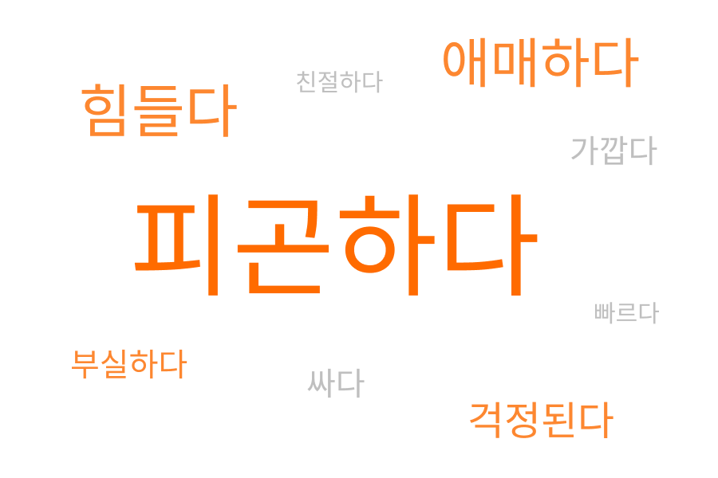
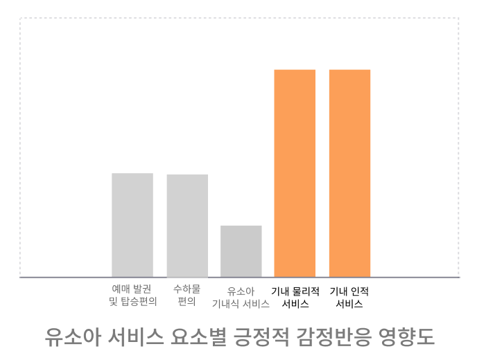
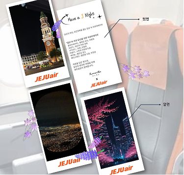
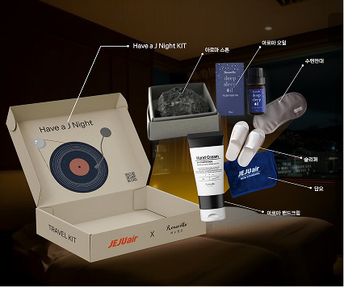
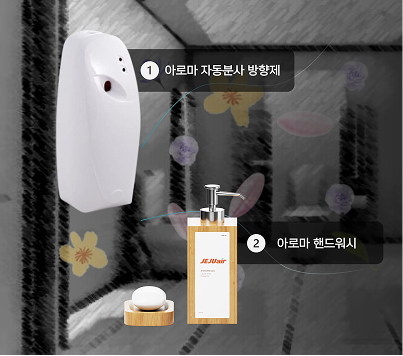
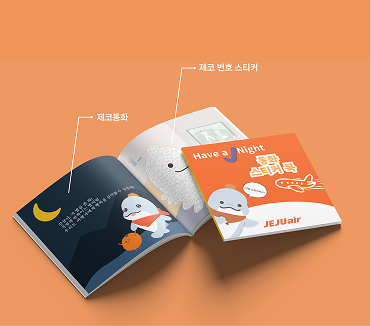
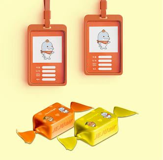
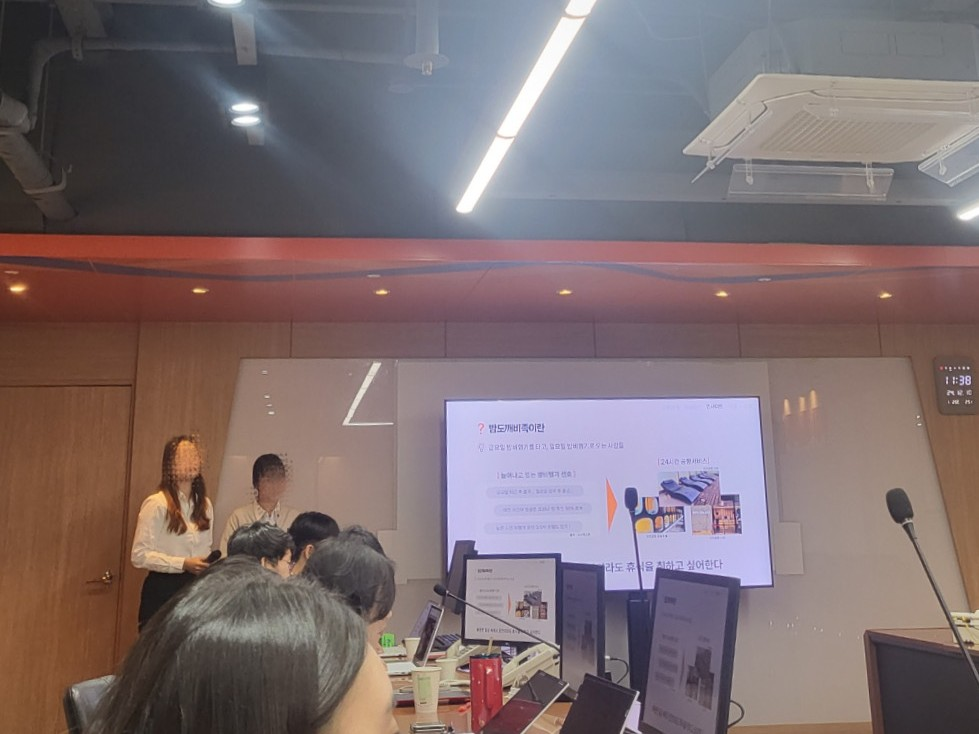
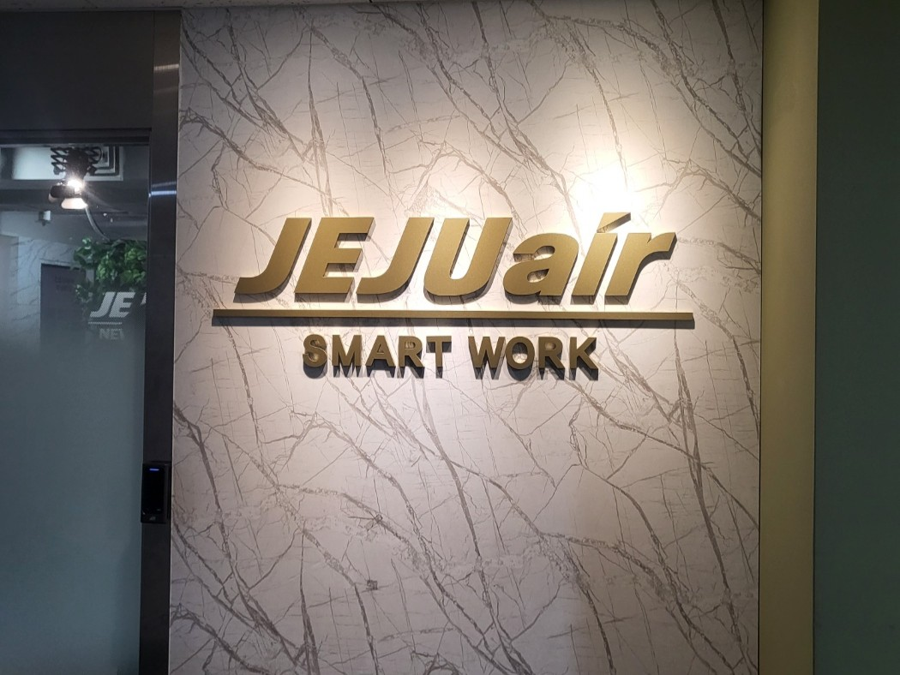

Research
- LCC 시장 및 경쟁사 분석
- 야간 비행 서비스 사례 조사
- 썸트렌드 키워드 분석
- 고객 후기 분석


Insight
PainPoint를 보완하는 경험을 통해 야간비행=제주항공 포지셔닝

* 썸트렌드(24.10.28 - 11.28) 밤 비행기 긍·부정 키워드 분석 결과 주로 ‘피로’, ‘피곤함'
Structure
근본적인 고객 불편을 해결하고, 더 많은 고객에게 만족 제공
장시간 좌석 착석
근육 완화 및 신체 건강 개선

기내 물리적 서비스와 기내 인적 서비스가
가장 큰 영향을 미친다
유소아 및 동반승객에게
쾌적한 환경과 세심한 서비스 제공 중요
아이가 유아 서비스에 대한 집중 & 만족 시 모두가 편안함을 느낌
Execution
Adult Comfortable



Baby Comfortable


고객 여정 관리
맞춤 경험 제공
차별화된 경험 제공
특별한 경험으로 개선
Result
야간 비행이라는 운영 상황을 정확히 반영한 점과 가격 중심 LCC시장에서 경험 중심 전략을 제안한 부분이
이라는 평가를 받았습니다.


My Contribution 담당 업무 기여 비중
Retrospective(회고)
부가가치서비스를 기획하면서 다른 항공사 사례를 조사했는데, 처음에는 새롭다고 생각한 서비스 도 이미 운영 중인 경우가 많았습니다. 그래서 제주항공 고객에게 실제로 필요한지, 기존 서비스와 어떻게 차별화할 수 있는지를 고민해야 했습니다. 특히 대상 고객을 정하는 과정에서 의견 차이가 있었지만, 여러 승객이 공통적으로 겪는 불편을 해결하는 방향이 적합하다고 판단해 ‘야간 비행’을 주제로 선정했습니다
아이디어를 논의하기 전에 판단 기준을 먼저 세웠을 것 같습니다. 당시에는 각자 생각하는 좋은 서비스의 기준이 달라 주제를 정하는 데 시간이 오래 걸렸습니다. 고객 불편도, 실현 가능성, 제주항공과의 적합성, 차별성 같은 기준을 먼저 정했다면 더 빠르게 의견을 조율할 수 있었을 것 같습니다. 또한 지인들에게 설문조사를 부탁했었는데 조사 질문 을 더 구체적으로 설계했을 것 같습니다. 단순히 LCC 이용 시 불편한 점을 묻다 보니 좌석 간격이나 가격처럼 현실적으로 개선하기 어려운 답변이 많았습니다. 다시 한다면 야간 비행 상황에서 느끼는 불편처럼 기획으로 연결하기 쉬운 질문을 함께 넣었을 것 같습니다.
이 프로젝트를 통해 새롭게 든 생각도 있었습니다. 항공사마다 다양한 부가서비스가 존재함에도 많은 사람들이 이를 잘 모른다는 점이 흥미로웠고, 자연스럽게 '왜 이런 서비스들은 적극적으로 홍보되지 않을까', '실제 기획 담당자들은 어떤 기준과 논의를 거쳐 특정 대상을 타겟으로 서비스를 설계했을까'라는 궁금증이 생겼습니다. 수많은 서비스 중 특정 대상을 선택하기까지는 분명 우리 팀이 겪었던 것과 비슷한 고민과 조율 과정이 있었을 거라는 생각이 들면서, 실제 현업의 기획 과정에 대한 관심도 더 커졌습니다